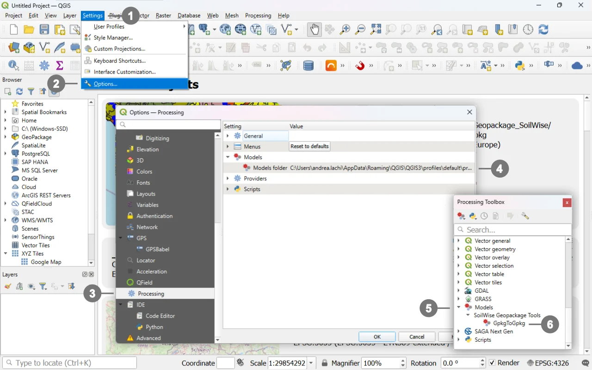
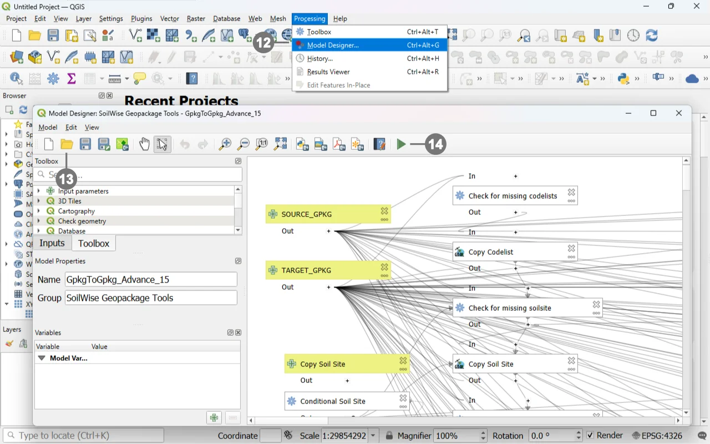

Download the model file from the GitHub repository. The file uses the following extension:
.model3
Keep the original file extension unchanged.
To avoid loading the .model3 file manually every time the tool is required, copy it to the folder used by QGIS to store Processing models.
Follow these steps:

① Open the Settings menu.
② Select Options.
In the Options dialog, select ③ Processing from the panel on the left.
On the right-hand side of the dialog, expand the Models section.
Locate the ④ Models folder setting.
The path displayed under Models folder identifies the directory in which QGIS searches for user-installed Processing models.
Copy the downloaded .model3 file into this folder.
Note
The folder path may vary depending on the operating system, QGIS version, and active QGIS user profile. For this reason, use the path displayed in the QGIS options instead of relying on a predefined system path.
After copying the file to the models folder, return to the main QGIS window.
If the Processing Toolbox is not visible, open it from:
Processing → Toolbox
In the Processing Toolbox, expand:
⑤ Models → SoilWise Geopackage Tools
⑥ Click the model name in the Processing Toolbox to open the Model Execution Dialog.
Note
If the model does not appear immediately, refresh the Processing Toolbox or restart QGIS.
The model can be opened directly in the Model Designer without first installing it in the models folder.
This method is useful when you need to:
The Model Designer represents a sequence of processing algorithms as a single workflow that can later be executed with different input data.
After downloading the .model3 file:

Open the Processing menu.
⑫ select Model Designer.
⑬ in the Model Designer window, select Open Model.
Use the file browser to locate the downloaded model.
Select a file in `.model3` format.
Confirm the selection.
⑭ Run the model.
The model is displayed in the Model Designer workspace, where the following elements are visible:
To run the model from the Model Designer:
The parameter dialog is the same as the one displayed when the model is launched from the Processing Toolbox. Running selected steps is particularly useful when developing, testing, or troubleshooting the model.
Opening the model in the Model Designer allows any of its components to be modified, including:
Before saving a modified version, it is advisable to: